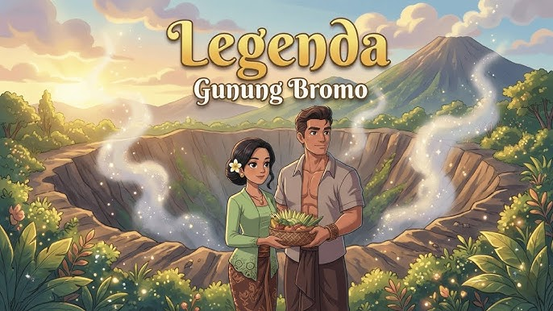

Pada zaman dahulu hiduplah sepasang suami istri bernama Roro Anteng dan Joko Seger. Mereka memimpin masyarakat yang tinggal di daerah pegunungan Tengger dengan bijaksana dan adil.
Meskipun hidup makmur dan dihormati oleh rakyat, mereka memiliki satu kesedihan besar, yaitu tidak memiliki anak. Setiap hari mereka berdoa kepada para dewa agar diberikan keturunan.
Suatu hari doa mereka dikabulkan oleh dewa yang berkuasa di gunung Bromo. Namun ada satu syarat yang harus mereka penuhi. Jika mereka memiliki banyak anak, maka anak bungsu mereka harus dikorbankan ke kawah gunung.
Roro Anteng dan Joko Seger akhirnya memiliki dua puluh lima orang anak. Mereka hidup bahagia, tetapi lama-kelamaan mereka merasa tidak tega untuk memenuhi janji tersebut.
Ketika janji itu tidak ditepati, gunung Bromo menjadi sangat marah. Gunung tersebut meletus dan mengeluarkan suara gemuruh yang menakutkan. Anak bungsu mereka yang bernama Raden Kusuma akhirnya jatuh ke kawah gunung.
Sebelum menghilang, Raden Kusuma berpesan agar masyarakat Tengger setiap tahun memberikan persembahan ke kawah gunung sebagai tanda syukur kepada para dewa.
Sejak saat itu masyarakat Tengger melakukan upacara Yadnya Kasada di Gunung Bromo sebagai bentuk penghormatan dan rasa syukur.
Siapa pasangan dalam legenda Gunung Bromo?